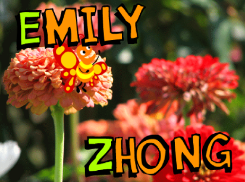
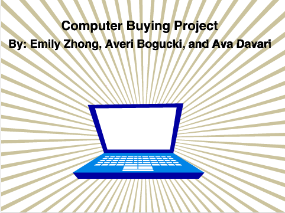
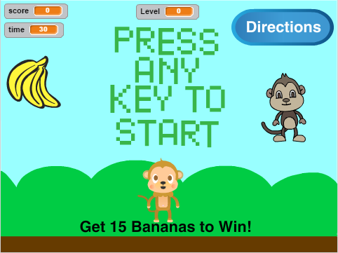

Scratch Content
Name Assignment

Description
The directions of the Name Assignment was to use scratch to design and create a program that shows my name. The requirements were to add a sprite for each letter in my name and give them 3 unique behaviors. The program needed to run when the green flag was clicked, and for extra credit I added a function to reset the scene to the beginning, each time the green flag was clicked.
Concepts Learned:
- Using event blocks-(I used the when green flag clicked, and when a key is pressed blocks.
- Conditional statements-(I used if statements to make my sprite bounce if touching an edge.)
- Used loops- (I used a forever block to make my sprite move around and bounce of the edges.)
- Sprites- (I created my own sprites using the sprite editor, used the library of sprites to find letters in my name, and found my butterfly sprite that would move around my project.)
- Movement- (I used the x and y values to make my sprite move to their original location when the green flag was clicked, and I rotated my sprites to make them go in a certain direction).
Computer Buying Project

Description
I used scratch to program a slideshow that would showcase 4 different computer options for a computer buyer that we interviewed. The requirements of the slideshow included that it needed to have information about all four of the computers, along with which computer we choose for the computer buyer in the end.
Conecpts Learned:
- Using event blocks-(I used the when green flag is clicked to make my slideshow reset and go back to the beginning of the presentation when it was pressed. I also used the when right arrow is pressed, go to the next backdrop to change the slide.)
- Used loops-(I used a forever block to make a sprite in my slideshow change costumes forever, so that it kept on moving until we pressed the green flag and the whole slideshow reset.)
- Sprites-( I used the library of sprites to find some artwork and design for my slideshow. I found a computer and a little crab, that would help me make my slideshow a little more colorful.)
Final Project

Description
For our final project in scratch, our job was to create either a game or a story. I choose to create a game, and the requirements was to let the the player know if they won, keep a score, have a timer, have a help screen with directions, the game resets when the green flag is clicked, the game stops when it is over, and the game gets harder as you keep playing.
Conecpts Learned:
- Using event blocks-(I used the when green flag is clicked block to reset my game, the when any key is pressed block to have the directions and the press any key to start words disappear when the game started, and when backdrop switches to a certain backdrop block to hide certain sprites.)
- Conditional statements-( I used a lot of if statements in my program. I used if statements to make my bananas disappear and go to a different location when either of the monkeys touched it. And, I used if statements to make my monkeys score and level increase when it got bananas.)
- Used loops-(I used many forever blocks in my program. I used forever blocks to make sure that my sprites would always in the direction of my arrow keys.
- Sprites- (I used the library of sprites to find letters to write out PRESS ANY KEY TO START, along with my banana and monkey sprites that would be the characters in my game.)
- Movement- (I used the x and y values to make my sprite move to their original location when the green flag was clicked, or it switched to a different backdrop).